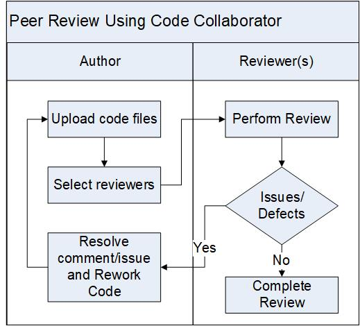

Peer Review Procedure Using Code Collaborator Tool¶
Peer review is method for inspection of newly written or modified code for the purpose of discovering and fixing bugs before files are checked in. Numerous studies have shown that use of peer reviews early in software development and test leads to significantly fewer defects found during stabilization phase and more importantly, significantly fewer defects found by customers. The earlier in development/test cycle that a defect is found, the quicker it is to fix. By using an efficient tool such as Code Collaborator to conduct peer reviews, the cumulative time spent conducting code reviews and thus fixing defects early is far quicker than time required to find and fix these defects later.
The peer review is required for the following but not limited to:
High Level Designs (HLDs)
Source code updates
Documentation updates
Defect fixes
Test plans and test strategies
Test code updates
The author of the work products is responsible for the execution of the peer review procedure.
Entry Criteria/Inputs |
|
Exit Criteria/Outputs |
|
Roles¶
Reviewer |
A reviewer is a person responsible for finding and reporting bugs in newly implemented or modified sections of code. The reviewer is a second pair of eyes who must actively approve an artifact/work product or must file bugs within the Code Collaborator tool wherever a bug is identified. The review cannot be completed without express approval from all reviewers. The artifact/work product may not be checked in without a completed review. There must be at least one reviewer participating in a review. This person ideally would be someone who is familiar with the code or familiar with related code that fits into the same system. Usually the Domain lead is responsible to review all code within his or her domain. It would be wise to include more than one reviewer on the more complex reviews. The author should use his or her best discretion as to how many reviewers to include but in most cases more than a few reviewers would not be recommended. Preferred reviewer: Domain Leads, peer Developer who has the experience, InfoDev team for any customer facing content. |
Observer |
An observer (e.g., Product Architect, Scrum Tester) is an optional participant in a review. No observer is required to do anything for a review. There are often many observers for any given code review. |
Responsibilities¶
Reviewer |
|
Observer |
|
Author |
Note: All comments must be read by all reviewers before a review can be completed, even if the comment was added by an observer. |
Activities¶

Step # |
Activity Name |
Description |
|---|---|---|
1 |
Upload files |
The author uploads the artifact or work product in to the Code Collaborator tool. The following information should be entered by the author:
A good description should:
|
2 |
Select reviewers |
The Author selects reviewers (e.g., domain experts) and observers for the review. |
3 |
Perform review |
The Reviewer performs the review and documents the issues/defects in the CC tool. When an issue is identified, the Reviewer enters a comment or files bug depending on different issue types [See File Subcriptions section below]. |
4 |
Resolve comment/issue |
The Author reworks the artifact or work product to fix the issue/defect and responds to the review comments. |
5 |
Complete Review |
The Author marks the CC review record as “completed” when the Reviewer review status is in the “Approved” state. The review is complete when:
For better traceability, link the code review link to requirement and defect tracking systems, by:
Once the peer review is completed,
|

Comment Vs. Bug¶
The Code Collaborator tool provides the ability for reviewers to insert comment messages and to generate bugs. It is important to understand the distinction between adding a comment and creating a bug.
A reviewer is more than welcome to enter comments to ask questions about the code or to ask for background information in order to help understand the code. Note: quite often if a reviewer is asking for clarification, this may bean indication that the code should be commented better, so a bug may be submitted with a description something like: “Add a comment for XXX”. Often the coder will so deeply understand the implementation and not realize the importance of well positioned comments.
The definition of a bug is very simple: if there is something wrong with the code, no matter how trivial, this is a bug and needs to be recorded. Trivial typos in source code that do not affect operation are bugs as much as significant algorithm coding problems. It is important to track code issues as bugs and avoid using comments that can be missed and not tracked.
Here are some examples of errors all of which should be entered as bugs:
Bug |
Severity |
Type |
Incorrect WRS copyright date |
Minor |
Coding Standard |
Incorrect modification history sequence due to merge |
Minor |
Coding Standard |
Misspelled word/typos |
Minor |
Documentation |
Leading white space not aligned with previous line |
Minor |
Coding Standard |
Unclear algorithm should be commented more clearly |
Minor |
Documentation |
Array out of bounds error |
Major |
Algorithm |
Function arguments in incorrect order |
Major |
Algorithm |
Footprint significantly increases |
Major |
Algorithm |
Appendices¶
Appendix A - File Subscriptions¶
The Code Collaborator tool provides the ability for users to create file subscriptions that allow them to be automatically included in reviews where particular files of interest that match a predefined path pattern under “Settings” -> “File Subscriptions”.
The usage of “File Subscriptions” can help domain owners to get involved to code reviews of any changes to a specific domain, but it could also lead to potential delayed completion of code reviews if not used wisely. Here are some guidelines:
Recommend that the “File Subscriptions” should be setup with the “My Role” setting set to “Observer” (this applies to so-called Domain Leads/Owners and PA-Owner’s).
When a Code Collaborator review is started that affects one of the subscribed source files, the subscriber will get an e-mail notification. At this point, the subscriber can decide whether they feel it’s necessary to actively participate in the review (based on the scope of the changes, time commitment, etc.), and then manually change their role from “Observer” to “Reviewer”.
To support primary and secondary reviewers, i.e. to handle the vacation scenario, more than one engineer can subscribe to a given set of files.
An author of a Code Collaborator review should use the capability to switch the role of individual from “Reviewer” to “Observer” only in extreme situations, e.g. both the primary and secondary reviewers are sick, and the author has reached out to the respective managers and architects and it’s agreed that it’s okay to switch the individual from “Reviewer” to “Observer”.
References¶
Code Collaborator: http://codereview.wrs.com/ by SmartBear Software as the code review tool
Change Log¶
Date |
Change Request ID |
Version |
Change By |
Description |
04/30/2020 |
N/A |
0.1 |
Shree Vidya Jayaraman |
Transferred content from Code review process (v0.7) |
06/19/2020 |
N/A |
0.2 |
Shree Vidya Jayaraman |
Updated based on Kitty’s comments |
06/22/2020 |
N/A |
0.3 |
Shree Vidya Jayaraman |
Updated based on Kitty’s comments |
07/13/2020 |
N/A |
0.4 |
Shree Vidya Jayaraman |
Updated based on Kitty’s comments |
07/22/2020 |
N/A |
0.5 |
Shree Vidya Jayaraman |
Updated based on Kitty’s comments |